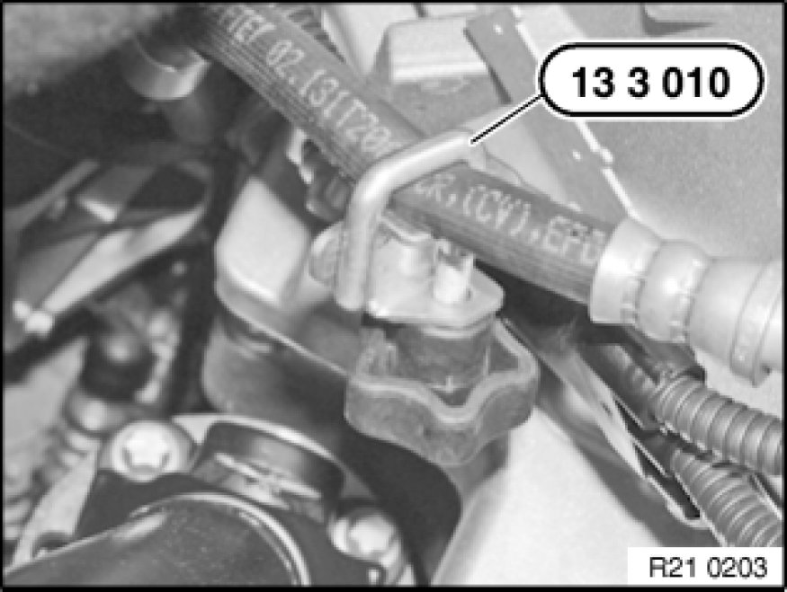
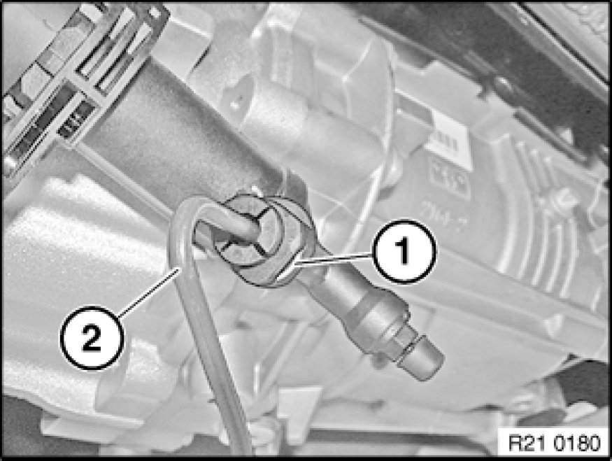
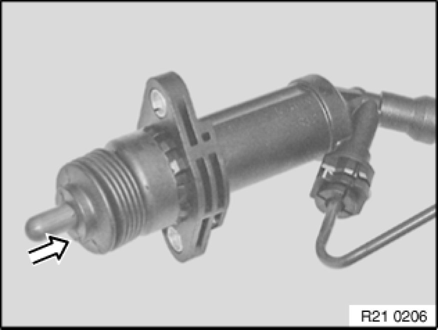
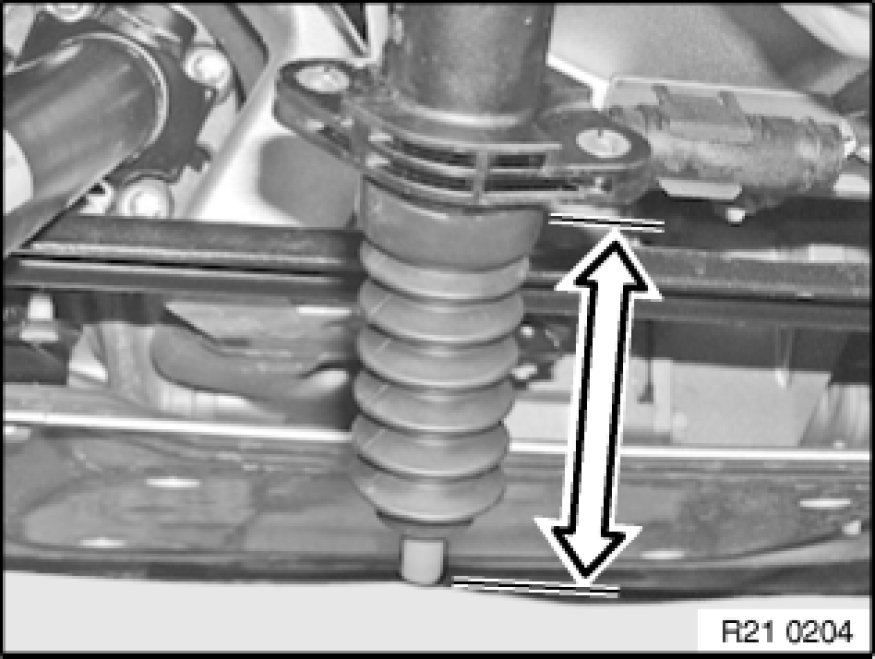
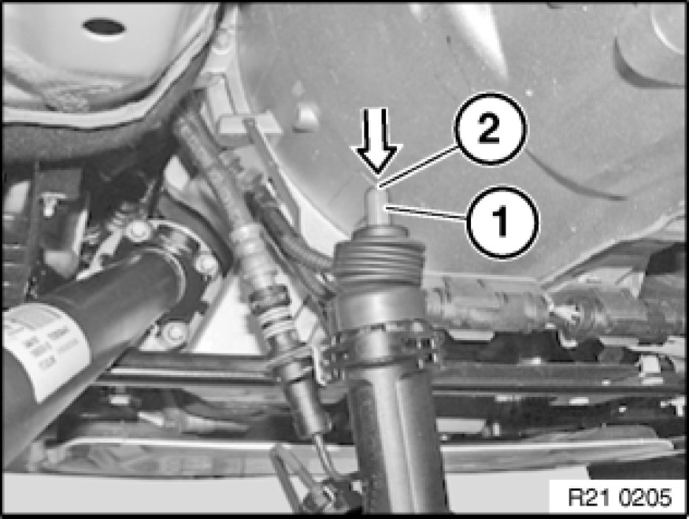

Clutch Slave Cylinder: Service and Repair
21 52 510 - Removing and installing/replacing clutch slave cylinder (plastic)

Special tools required:
- 13 3 010 13 3 010 Hose Clip
Note:
After completing work bleed clutch hydraulic system Service and Repair.

Seal hydraulic line to clutch slave cylinder with special tool 13 3 010 13 3 010 Hose Clip.

Release nuts and remove clutch slave cylinder (1) with holder (2).
Installation:
Replace self-locking nuts.
Tightening torque 21 52 5AZ Specifications.
Important!
N47 with H-transmission only
Clutch slave cylinder must not rest at the side on the transmission.
Failure to comply with this instruction may result in leaks at the clutch slave cylinder.

Unlock spring retainer (1).
Disconnect hydraulic line (2).

Press cylinder together by hand.
Connect hydraulic line with cylinder pressed.

Remove special tool 13 3 010 13 3 010 Hose Clip.
Hold cylinder piston vertically downwards.
Press piston 5 times into cylinder.

Important!
All-wheel drive vehicles only
Installation Note:
Check pressure hose for traces of abrasion.
If no traces of abrasion by the propeller shaft can be detected on the pressure hose:
The pressure hose must be bent approx. 30 mm away from the propeller shaft.
If traces of abrasion by the propeller shaft can be detected on the pressure hose:
The pressure hose must be replaced.
After replacement, the clutch hydraulics must be bled Service and Repair.

Press in piston until it engages.
Install clutch slave cylinder.
Bleed clutch hydraulics Service and Repair.
Installation:
Clean thrust member (1) and contact face on release lever.
Lightly grease thrust member (1) on contact face (2).
Grease, refer to BMW Service Operating Fluids.